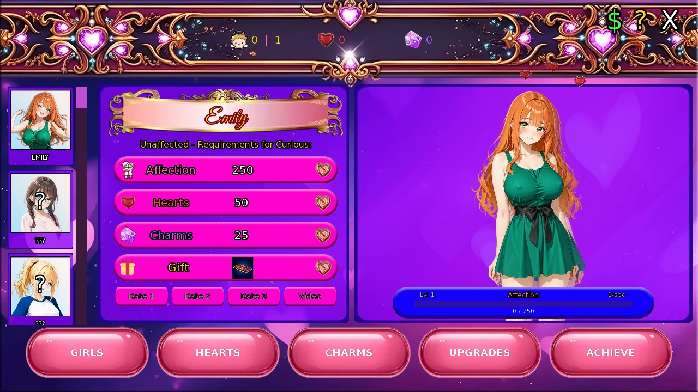
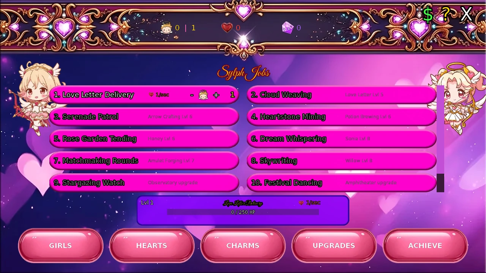
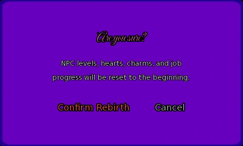
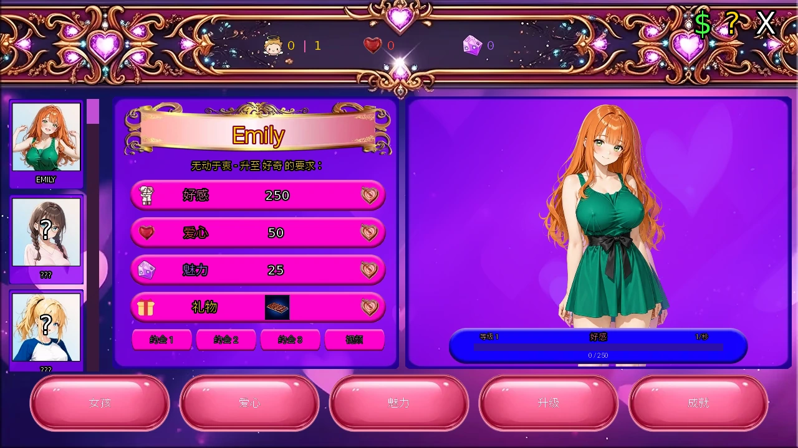
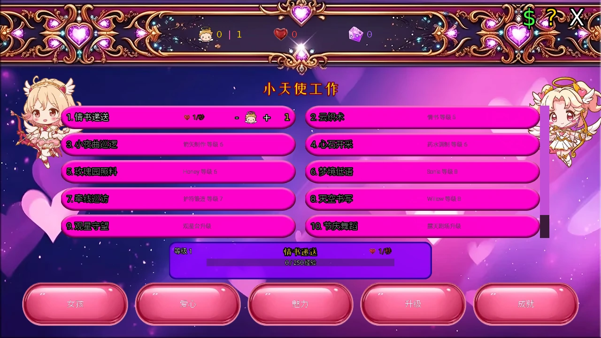
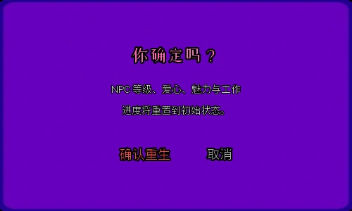

Select a screenshot to enlarge it. Screens show example inventories and progress.
Start Kupie’s Love Training
Kupie’s Love Training is a persistent idle/clicker minigame with 31 NPC entries,24 production jobs,14 purchasable upgrades and 140 achievements. Its Hearts, Charms, Affection and NPC levels are separate from ordinary relationship points and player stats. Gifts and upgrade supplies come from your actual inventory.
Follow the visible Cupid’s Arrow tutorial instruction to unlock the activity, then choose Kupie’s Love Training from your Present-era bedroom. Lillian’s Redeem Crystal Code screen is the code-entry route referred to by that tutorial. Use the code shown by the released game; this guide does not add private or unverified codes.
The action has 0 in-game time cost. Remaining inside does not consume a separate Energy or Calm entry fee. Production uses real elapsed time, including time away from the minigame, and is settled when you return. Ordinary gifts, purchases and upgrades still deduct their listed real items, materials, Crystals or Wealth.
A useful opening route
- Begin with Emily and your first Sylph. Assign it to Love Letter Delivery for Hearts or Feather Weaving for Charms; move it between the two as needed.
- Click Emily to start her timed Affection and add click Affection. Meet and confirm all four requirements for the next level.
- Claim available achievements. Extra Sylphs expand the production team, while upgrades can open additional jobs or multiply output.
- Advance Emily to 3 for Orchid and 5 for Bella; Bella 3 opens Katie, while Bella 5 opens Sonia. Except Emily, you also need Friend or better with the corresponding NPC in the main game.
- Keep at least one real Sylph in a job you want running. A job with zero real assignments does not become active solely from phantom-Sylph bonuses.
Four requirements for every NPC level
| Requirement | What to do |
|---|---|
| Affection | Click once to start its timer, then click or wait. Confirm the requirement when enough has accumulated. |
| Hearts | Pay the displayed amount from the shared Hearts balance. |
| Charms | Pay the displayed amount from the shared Charms balance. This is minigame currency, not your Charm stat. |
| Gift | Give the exact named consumable and quantity required at that level. |
All four must be marked complete for a level-up. Hearts, Charms and gifts are spent; Affection is a threshold. On leveling, the four confirmations and that level’s Affection reset. NPCs reach level 10. Click-started Affection timers can run for multiple NPCs at once, so start the timers for available NPCs you plan to advance.
Matching an NPC’s favorite-stat requirements and special skill adds to your click value. Production synergies and items provide larger later bonuses. Timed Affection is banked at the rates actually active during each interval; buying an upgrade does not retroactively multiply all previous waiting time.

Optional reference: all 31 NPC unlocks and gifts
The table gives the ordinary first-run minigame unlock and level 1 bases. Except Emily, main-game Friend is also required. Achievement-count gates use claimed achievements. Rachel’s 3 hours means tracked time spent in this minigame, not every hour of offline production. Some entries separately require the content access indicated by the game.
Show NPC unlocks and base requirements
| NPC | Minigame requirement | Affection base | Hearts base | Charms base | Later-step modifier | Access |
|---|---|---|---|---|---|---|
| Emily | Available from the start. | 250 | 50 | 25 | None | — |
| Bella | Reach level 5 with Emily to unlock | 500 | 50 | 100 | None | — |
| Katie | Reach level 3 with Bella to unlock | 650 | 75 | 75 | None | — |
| Orchid | Reach level 3 with Emily to unlock | 750 | 100 | 100 | None | — |
| Akira | Reach Love Letter Delivery Lvl 8 to unlock | 750 | 100 | 75 | affection ×3 per later step, hearts ×3 per later step, charms ×3 per later step | — |
| Sonia | Reach level 5 with Bella to unlock | 1000 | 200 | 100 | None | — |
| Mindy | Reach 5,000 total clicks to unlock | 1500 | 200 | 100 | None | — |
| Elara | Reach level 5 with Sonia to unlock | 2000 | 200 | 400 | None | — |
| Honey | Reach level 5 with Elara to unlock | 4000 | 800 | 400 | None | — |
| Rachel | Spend 3 hours in Kupie's Love Training to unlock | 6000 | 800 | 1000 | affection ×1 per later step, hearts ×1 per later step, charms ×2 per later step | — |
| Willow | Reach level 5 with Honey to unlock | 8000 | 800 | 1600 | None | — |
| Martha | Reach Potion Brewing Lvl 7 to unlock | 12000 | 2000 | 1400 | None | — |
| Grace | Reach Gem Polishing Lvl 7 to unlock | 7500 | 1200 | 1500 | affection ×1 per later step, hearts ×1.5 per later step, charms ×1.5 per later step | — |
| Ghost | Reach level 5 with Willow to unlock | 16000 | 3200 | 1600 | None | — |
| Glitch | Reach level 3 with Ghost to unlock | 16000 | 1600 | 3200 | None | Additional content access |
| Lucy | Reach level 5 with Ghost to unlock | 32000 | 3200 | 6400 | None | — |
| Nerida | Reach Potion Brewing Lvl 7 to unlock | 24000 | 2400 | 3200 | None | Additional content access |
| Abby | Earn 60 achievements to unlock | 48000 | 3200 | 6400 | None | Additional content access |
| Sashina | Reach Cupid's Command Lvl 2 to unlock | 56000 | 6400 | 3200 | affection ×1 per later step, hearts ×2.3 per later step, charms ×1 per later step | — |
| Blinky | Reach Heartstone Mining Lvl 7 to unlock | 10000 | 1600 | 2000 | None | Additional content access |
| Miki | Reach level 5 with Lucy to unlock | 64000 | 12800 | 6400 | None | Additional content access |
| Vera | Reach level 5 with Miki to unlock | 128000 | 12800 | 25600 | None | Additional content access |
| Nova | Reach Lucy Lvl 5 and complete 1 rebirth to unlock | 192000 | 25600 | 38400 | None | — |
| Jessie | Reach level 5 with Vera to unlock | 256000 | 51200 | 25600 | None | Additional content access |
| Talena | Reach Festival Dancing Lvl 9 to unlock | 384000 | 51200 | 51200 | None | Additional content access |
| Maggie | Claim 80 achievements and complete 1 rebirth to unlock | 96000 | 19200 | 25600 | None | — |
| Lilu | Reach Charm Enchanting Lvl 9 to unlock | 448000 | 51200 | 76800 | None | Additional content access |
| Portia | Reach level 5 with Jessie to unlock | 512000 | 51200 | 102400 | None | Additional content access |
| Arestes | Claim 100 achievements and complete 1 rebirth to unlock | 600000 | 76800 | 76800 | affection ×1.2 per later step, hearts ×1.1 per later step, charms ×1.1 per later step | Additional content access |
| Vespa | Claim 112 achievements, complete 2 rebirths, and reach Arestes Lvl 8 to unlock | 700000 | 112000 | 112000 | affection ×1.28 per later step, hearts ×1.25 per later step, charms ×1.25 per later step | Additional content access |
| Artemis | Reach Vespa Lvl 10 and complete 3 rebirths to unlock | 1000000 | 180000 | 180000 | affection ×1.28 per later step, hearts ×1.55 per later step, charms ×1.25 per later step | Additional content access |
Show every level 1–9 gift requirement
L 1 means the gift requested while currently level 1 to reach level 2; L 9 is the final promotion to 10. Quantities are consumed.
| NPC | L 1 | L 2 | L 3 | L 4 | L 5 | L 6 | L 7 | L 8 | L 9 |
|---|---|---|---|---|---|---|---|---|---|
| Emily | Chocolate ×1 | Chocolate ×2 | Flowers ×1 | Teddy ×1 | Flowers ×2 | Book ×1 | Lingerie ×1 | Wine ×1 | Perfume ×1 |
| Bella | Chocolate ×1 | Flowers ×1 | Teddy ×1 | Book ×1 | Lingerie ×1 | Book ×2 | Book ×3 | Perfume ×1 | Book ×4 |
| Katie | Chocolate ×1 | Flowers ×1 | Teddy ×1 | Chocolate ×2 | Book ×1 | Wine ×1 | Perfume ×1 | Lingerie ×1 | Jewelry ×1 |
| Orchid | Flowers ×1 | Chocolate ×1 | Book ×1 | Flowers ×2 | Teddy ×1 | Book ×2 | Flowers ×3 | Perfume ×1 | Jewelry ×1 |
| Akira | Book ×1 | Wine ×1 | Book ×2 | Chocolate ×1 | Book ×3 | Wine ×2 | Perfume ×1 | Book ×4 | Jewelry ×1 |
| Sonia | Flowers ×1 | Chocolate ×2 | Teddy ×1 | Wine ×1 | Flowers ×2 | Lingerie ×1 | Perfume ×1 | Teddy ×3 | Jewelry ×1 |
| Mindy | Chocolate ×1 | Flowers ×1 | Teddy ×1 | Chocolate ×3 | Book ×1 | Teddy ×2 | Wine ×1 | Lingerie ×1 | Perfume ×1 |
| Elara | Flowers ×1 | Book ×1 | Perfume ×1 | Teddy ×2 | Wine ×1 | Focus ×1 | Book ×2 | Jewelry ×1 | Perfume ×2 |
| Honey | Chocolate ×2 | Flowers ×1 | Teddy ×1 | Chocolate ×3 | Wine ×1 | Lingerie ×1 | Teddy ×2 | Perfume ×1 | Jewelry ×1 |
| Rachel | Book ×1 | Flowers ×1 | Book ×2 | Wine ×1 | Focus ×1 | Book ×3 | Perfume ×1 | Antidote ×1 | Jewelry ×1 |
| Willow | Flowers ×1 | Teddy ×1 | Chocolate ×2 | Antidote ×1 | Wine ×1 | Flowers ×3 | Perfume ×1 | Lingerie ×2 | Jewelry ×1 |
| Martha | Wine ×1 | Chocolate ×2 | Flowers ×1 | Wine ×2 | Perfume ×1 | Book ×1 | Wine ×3 | Lingerie ×1 | Jewelry ×1 |
| Grace | Chocolate ×1 | Flowers ×1 | Book ×1 | Wine ×1 | Perfume ×1 | Lingerie ×1 | Jewelry ×1 | Wine ×2 | Jewelry ×2 |
| Ghost | Chocolate ×2 | Flowers ×2 | Teddy ×1 | Time ×1 | Book ×2 | Wine ×1 | Lingerie ×1 | Perfume ×2 | Jewelry ×1 |
| Glitch | Chocolate ×1 | Book ×1 | Focus ×1 | Chocolate ×2 | Book ×2 | Time ×1 | Chocolate ×3 | Focus ×2 | Jewelry ×2 |
| Lucy | Flowers ×2 | Teddy ×2 | Wine ×1 | Lingerie ×1 | Cologne ×1 | Book ×3 | Perfume ×1 | Jewelry ×1 | Perfume ×2 |
| Nerida | Teddy ×1 | Flowers ×2 | Book ×1 | Time ×1 | Wine ×2 | Lingerie ×2 | Perfume ×1 | Power ×1 | Jewelry ×2 |
| Abby | Teddy ×3 | Wine ×2 | Lingerie ×2 | Book ×3 | Desire ×1 | Perfume ×2 | Wine ×4 | Jewelry ×1 | Lingerie ×4 |
| Sashina | Book ×1 | Wine ×1 | Book ×2 | Perfume ×1 | Wine ×2 | Book ×3 | Focus ×1 | Perfume ×2 | Jewelry ×1 |
| Blinky | Book ×1 | Chocolate ×2 | Teddy ×1 | Book ×2 | Flowers ×2 | Wine ×1 | Book ×3 | Perfume ×1 | Jewelry ×1 |
| Miki | Toy ×1 | Toy ×2 | Toy ×3 | Toy ×4 | Toy ×5 | Toy ×6 | Toy ×7 | Toy ×8 | Toy ×9 |
| Vera | Wine ×2 | Perfume ×2 | Lingerie ×3 | Luck ×2 | Jewelry ×2 | Wine ×5 | Perfume ×4 | Voucher ×2 | Jewelry ×4 |
| Nova | Chocolate ×3 | Book ×2 | Focus ×2 | Time ×2 | Book ×4 | Chocolate ×5 | Focus ×3 | Perfume ×3 | Jewelry ×3 |
| Jessie | Wine ×1 | Wine ×2 | Wine ×3 | Wine ×4 | Wine ×5 | Wine ×6 | Wine ×7 | Wine ×8 | Wine ×9 |
| Talena | Lingerie ×3 | Perfume ×3 | Jewelry ×2 | Wine ×6 | Gemstone Heels ×1 | Perfume ×5 | Jewelry ×3 | Lingerie ×6 | Gemstone Heels ×3 |
| Maggie | Book ×2 | Wine ×2 | Focus ×1 | Chocolate ×4 | Book ×5 | Voucher ×1 | Perfume ×3 | Jewelry ×2 | Voucher ×3 |
| Lilu | Book ×2 | Flowers ×3 | Wine ×3 | Perfume ×3 | Lingerie ×4 | Wine ×6 | Jewelry ×3 | Lingerie ×6 | Jewelry ×5 |
| Portia | Perfume ×5 | Jewelry ×3 | Gemstone Heels ×2 | Lingerie ×8 | Jewelry ×5 | Perfume ×10 | Gemstone Heels ×4 | Jewelry ×8 | Gemstone Heels ×6 |
| Arestes | Dragon Coin ×1 | Jewelry ×2 | Voucher ×2 | Luck ×2 | Perfume ×5 | Gemstone Heels ×4 | Jewelry ×8 | Dragon Coin ×1 | Gemstone Heels ×8 |
| Vespa | Chocolate ×5 | Wine ×4 | Jewelry ×2 | Gemstone Heels ×1 | Perfume ×6 | Jewelry ×5 | Dragon Coin ×1 | Gemstone Heels ×5 | Jewelry ×9 |
| Artemis | Book ×2 | Focus ×2 | Shield ×2 | Wine ×2 | Book ×4 | Focus ×3 | Perfume ×3 | Jewelry ×3 | Jewelry ×5 |
Affection requirements grow faster than Hearts/Charms. Without a special modifier, current levels 1–9 use Affection multipliers 1,3,12,60,360,2,520,20,160,181,440 and 1,814,400; Hearts/Charms use 1,2,6,24,120,720,5,040,40,320 and 362,880. Listed NPC modifiers compound on later steps. The current card is the best reference for the exact next payment.
Sylph assignments and real-time production
Hearts and Charms each have twelve jobs, with levels 1–10. Assign or remove Sylphs with the +/−controls. A job allows up to 30 real Sylphs; phantom and cross-job bonuses can raise its effective workforce beyond that. Job levels and purchased multipliers affect output, while job XP has its own calculation. A bonus to total currency does not necessarily multiply job XP.
Production has no ordinary offline accumulation cap. Returning settles elapsed output and job level-ups in order. Small fractions are retained rather than discarded every tick. Claim achievements and review newly opened jobs after an extended absence. More Sylphs come from achievements, the Nursery/Dormitory/Academy upgrades and rare dungeon finds.
The effective game-speed upgrades add together: Hermes Shoes 2×, Cupid’s Wings+4×, Divine Blessing+6× give 12×when all owned, not 48×. Rebirth and appropriate item bonuses apply separately. Each active heart job gains a phantom Sylph from Celestial Trumpet; each active charm craft gains one from Enchanted Harp. These do not consume assignable Sylphs.

Optional reference: all 24 jobs and synergies
In these effects, “Sylphs” means the job’s effective count where applicable. Multipliers that need more than one effective Sylph do not provide a negative or zero multiplier at an empty assignment. Keep the source job active before expecting its bonus.
Show the twelve Heart jobs
| Job | Base level-up XP | Unlock | Special effect |
|---|---|---|---|
| Love Letter Delivery | 250 | Initially available | |
| Serenade Patrol | 1000 | Arrow Crafting Lvl 6 | +sylphs to all Hearts XP |
| Rose Garden Tending | 4000 | Honey Lvl 6 | ×(lvl+sylphs) own production |
| Matchmaking Rounds | 16000 | Amulet Forging Lvl 7 | ×sylphs total Hearts/sec |
| Stargazing Watch | 64000 | Observatory upgrade | ×sylphs Affection rate |
| Cupid's Command | 256000 | All left heart jobs Lvl 8 | ×(1.3×sylphs) to left Hearts jobs |
| Cloud Weaving | 500 | Love Letter Lvl 5 | +production to Affection/sec |
| Heartstone Mining | 2000 | Potion Brewing Lvl 6 | ×sylphs Rune Carving production |
| Dream Whispering | 8000 | Sonia Lvl 8 | +sylphs to all Charms base |
| Skywriting | 32000 | Willow Lvl 8 | ×sylphs Love Letter production |
| Festival Dancing | 128000 | Amphitheater upgrade | +(sylphs+lvl) Affection & Click |
| Celestial Harmony | 256000 | All right heart jobs Lvl 8 | ×(1.3×sylphs) to right Hearts jobs |
Show the twelve Charm crafts
| Job | Base level-up XP | Unlock | Special effect |
|---|---|---|---|
| Feather Weaving | 250 | Initially available | |
| Potion Brewing | 1000 | Cloud Weaving Lvl 6 | +sylphs to all Charms XP |
| Gem Polishing | 4000 | Amulet Forging Lvl 7 | ×(lvl+sylphs) own production |
| Spell Scribing | 16000 | Matchmaking Lvl 7 | ×sylphs total Charms/sec |
| Crystal Infusing | 64000 | Skywriting Lvl 8 | ×sylphs Click value |
| Arcane Fusion | 256000 | All left charm crafts Lvl 8 | ×(1.3×sylphs) to left Charms crafts |
| Arrow Crafting | 500 | Workshop upgrade | +production to Click value |
| Amulet Forging | 2000 | Gem Cutter upgrade | +sylphs to Potion Brewing base |
| Rune Carving | 8000 | Gem Cutter upgrade | +sylphs to all Hearts base |
| Perfume Distilling | 32000 | Ghost Lvl 8 | ×sylphs Feather Weaving production |
| Charm Enchanting | 128000 | Lucy Lvl 8 | ×0.5/sylph to all XP |
| Enchanter's Legacy | 256000 | All right charm crafts Lvl 8 | ×(1.3×sylphs) to right Charms crafts |
A useful engine is to develop both currencies, then unlock cross-job support rather than stacking every Sylph into one early job. Cloud Weaving helps timed Affection, Arrow Crafting helps clicking, and the later workforce/XP links can accelerate both columns. Rose Garden Tending and Gem Polishing reward concentrated staffing; the capstone jobs multiply their own column.
All 14 purchasable upgrades
Each upgrade is bought once and survives Rebirth. Costs come from your main-game wallet and crafting supplies. Buy an upgrade in the Upgrades tab; owning a similarly named skill or item is not the same purchase.
| Upgrade | Cost | Effect |
|---|---|---|
| Sylph Nursery | 500 Wealth, 20 Common materials, 20 Common fabrics | +2 Sylphs |
| Sylph Dormitory | 1,000 Wealth, 1 Crystals | +5 Sylphs |
| Sylph Academy | 10,000 Wealth, 2 Crystals | +10 Sylphs |
| Post Office | 1,000 Wealth, 1 Crystals | Love Letter Delivery x 3 |
| Amphitheater | 50,000 Wealth, 50 Rare materials, 50 Rare fabrics | Unlocks Festival Dancing |
| Observatory | 500,000 Wealth, 20 Epic materials, 20 Epic ingredients | Unlocks Stargazing Watch |
| Workshop | 1,000 Wealth, 25 Common materials, 25 Common fabrics | Unlocks Arrow Crafting |
| Gem Cutter | 4,000 Wealth, 20 Rare fabrics, 20 Rare ingredients | Unlocks Amulet Forging & Rune Carving |
| Alchemy Lab | 5,000 Wealth, 1 Crystals | Potion Brewing x 3 |
| Hermes Shoes | 2 Crystals | 2 x Total Production Bonus |
| Cupid's Wings | 4 Crystals | +4 x Total Production Bonus (stacks) |
| Divine Blessing | 6 Crystals | +6 x Total Production Bonus (stacks) |
| Moon Dial | 1 Crystals | x 2 Click Value |
| Eternal Hourglass | 2 Crystals | x 2 Affection/sec |
Workshop opens Arrow Crafting. Gem Cutter opens Amulet Forging and Rune Carving. Observatory opens Stargazing Watch; Amphitheater opens Festival Dancing. Rebirth retains these purchases and reopens their upgrade-gated jobs, but resets job levels and XP.
Items and rewards that matter outside the minigame
| Bonus | Effect |
|---|---|
| Eternal Rose | ×2 click Affection. |
| Heartstring Locket | ×2 passive Affection. |
| Celestial Trumpet | +1 phantom Sylph for each active Heart job. |
| Enchanted Harp | +1 phantom Sylph for each active Charm craft. |
| Sylph Crown | ×2 production and job XP. |
| Proficiency Upgrade benefit | ×2 passive Affection while the corresponding purchased benefit is active. |
Dates unlock at NPC levels 3,6 and 9; level 10 opens the video reward. Reward scenes and ordinary relationship points are separate from the four paid level requirements. Keep the minigame card and the main relationship screen distinct.
Achievements also pay Crystals, maid accessories, permanent bonuses and army equipment. Claiming the reward is required. Specific maid accessories are often earned through a different NPC’s achievement—for example, Sonia Maxed awards Violet’s Stage Presence. The accessory’s wearer restriction still follows its own name.
The 20-item shop and its limits
The shop spends main-game Wealth. Buy one normally, or hold Shift to buy current stock in bulk where offered. Stock regenerates in real time to a maximum of 10; each item has its own restock interval. Gifts and potions enter the ordinary inventory.
Show prices, initial stock and restock intervals
| Item | Wealth price | Initial stock | Real hours per+1 stock |
|---|---|---|---|
| Chocolate | 50 | 10 | 4 |
| Flowers | 150 | 9 | 4 |
| Teddy | 250 | 7 | 5 |
| Book | 500 | 3 | 5 |
| Cologne | 600 | 1 | 6 |
| Toy | 700 | 1 | 6 |
| Lingerie | 800 | 1 | 7 |
| Time | 800 | 1 | 7 |
| Wine | 900 | 2 | 7 |
| Antidote | 900 | 1 | 7 |
| Focus | 1,000 | 1 | 8 |
| Power | 1,100 | 1 | 8 |
| Shield | 1,200 | 1 | 8 |
| Luck | 1,400 | 1 | 9 |
| Perfume | 1,500 | 1 | 9 |
| Desire | 1,800 | 1 | 10 |
| Voucher | 2,500 | 1 | 10 |
| Jewelry | 4,000 | 1 | 11 |
| Gemstone Heels | 5,000 | 1 | 11 |
| Dragon Coin | 1,000,000 | 1 | 12 |
Dragon Coin is the exception: $1,000,000 and at most one purchase per in-game day, with stock required. Bulk buying does not bypass this limit, and Rebirth does not reset that day’s purchase marker. Outside this shop, Gonzo’s normal coin-to-Crystal exchange is still a separate activity.
Claim achievements and keep the useful rewards
Open Achievements and claim a completed entry. Many gates count claimed entries, so leaving completed rewards unclaimed can block later NPCs. Each achievement is claimed once; Rebirth retains the claims and does not repay the same reward. The current catalog contains 140 entries.
Show all 140 achievement rewards
| # | Achievement | Reward |
|---|---|---|
| 1 | Emily Lvl 2 | 1 Sylph |
| 2 | Emily Lvl 4 | 1 Sylph |
| 3 | Love Letter Lvl 4 | 1 Sylph |
| 4 | Feather Weaving Lvl 5 | 1 Sylph |
| 5 | Bella Lvl 2 | 1 Sylph |
| 6 | Cloud Weaving Lvl 3 | 1 Crystal |
| 7 | Arrow Crafting Lvl 3 | 1 Sylph |
| 8 | Emily Maxed | Perfection Pendant |
| 9 | Love Letter Lvl 6 | 1 Sylph |
| 10 | Bella Lvl 4 | 1 Sylph |
| 11 | Serenade Patrol Lvl 3 | 1 Sylph |
| 12 | Potion Brewing Lvl 3 | 1 Crystal |
| 13 | Sonia Lvl 2 | 1 Sylph |
| 14 | Feather Weaving Lvl 7 | 1 Sylph |
| 15 | Cloud Weaving Lvl 5 | 1 Sylph |
| 16 | Bella Maxed | Dust Repellent Spray |
| 17 | Heartstone Mining Lvl 3 | 1 Sylph |
| 18 | Amulet Forging Lvl 3 | 1 Crystal |
| 19 | Sonia Lvl 4 | 1 Sylph |
| 20 | Arrow Crafting Lvl 5 | 1 Sylph |
| 21 | Bella Lvl 6 | 1 Sylph |
| 22 | Serenade Patrol Lvl 5 | 1 Sylph |
| 23 | Honey Lvl 2 | 1 Sylph |
| 24 | Sonia Maxed | Violet's Stage Presence |
| 25 | Gem Polishing Lvl 3 | 1 Crystal |
| 26 | Elara Lvl 4 | 1 Sylph |
| 27 | Potion Brewing Lvl 5 | 1 Sylph |
| 28 | Heartstone Mining Lvl 5 | 1 Sylph |
| 29 | Willow Lvl 2 | 1 Sylph |
| 30 | Honey Lvl 4 | 1 Crystal |
| 31 | Rune Carving Lvl 3 | 1 Sylph |
| 32 | Elara Maxed | Mandarin's Iron Will |
| 33 | Sonia Lvl 6 | 1 Sylph |
| 34 | Matchmaking Lvl 3 | 1 Sylph |
| 35 | Spell Scribing Lvl 3 | 1 Sylph |
| 36 | Ghost Lvl 2 | 1 Crystal |
| 37 | Willow Lvl 4 | 1 Sylph |
| 38 | Amulet Forging Lvl 5 | 1 Sylph |
| 39 | Skywriting Lvl 3 | 1 Sylph |
| 40 | Honey Maxed | Lychee's Frost Crystal |
| 41 | Perfume Distilling Lvl 3 | 1 Sylph |
| 42 | Ghost Lvl 4 | 1 Crystal |
| 43 | Lucy Lvl 2 | 1 Sylph |
| 44 | Stargazing Watch Lvl 3 | 1 Sylph |
| 45 | Crystal Infusing Lvl 3 | 1 Sylph |
| 46 | Miki Lvl 2 | 1 Sylph |
| 47 | Honey Lvl 6 | 1 Sylph |
| 48 | Willow Maxed | Lime's Burning Passion |
| 49 | Charm Enchanting Lvl 3 | 1 Crystal |
| 50 | Vera Lvl 2 | 1 Sylph |
| 51 | Jessie Lvl 2 | 1 Sylph |
| 52 | Willow Lvl 6 | 1 Sylph |
| 53 | Festival Dancing Lvl 5 | 1 Sylph |
| 54 | Lucy Lvl 5 | 1 Sylph |
| 55 | Miki Lvl 5 | 1 Sylph |
| 56 | Ghost Maxed | Rain's Analytical Lens |
| 57 | Love Letter Max | 1 Sylph |
| 58 | Serenade Max | 1 Sylph |
| 59 | Rose Garden Max | 1 Sylph |
| 60 | Matchmaking Max | 1 Sylph |
| 61 | Stargazing Max | 1 Sylph |
| 62 | Cloud Weaving Max | 1 Sylph |
| 63 | Heartstone Max | 1 Sylph |
| 64 | Dream Whisper Max | 1 Sylph |
| 65 | Skywriting Max | 1 Sylph |
| 66 | Festival Dancing Max | 1 Sylph |
| 67 | Feather Weaving Max | 1 Sylph |
| 68 | Potion Brewing Max | 1 Sylph |
| 69 | Gem Polishing Max | 1 Sylph |
| 70 | Spell Scribing Max | 1 Sylph |
| 71 | Crystal Infusing Max | 1 Sylph |
| 72 | Arrow Crafting Max | 1 Sylph |
| 73 | Amulet Forging Max | 1 Sylph |
| 74 | Rune Carving Max | 1 Sylph |
| 75 | Perfume Distilling Max | 1 Sylph |
| 76 | Charm Enchanting Max | 1 Sylph |
| 77 | Day 50 | 1 Sylph |
| 78 | Day 100 | 1 Sylph |
| 79 | Day 200 | 1 Sylph |
| 80 | Day 365 | 1 Sylph |
| 81 | 1,000 Clicks | 1 Sylph |
| 82 | 25,000 Clicks | 1 Sylph |
| 83 | 250,000 Clicks | 1 Sylph |
| 84 | 1,000,000 Clicks | 1 Sylph |
| 85 | Mindy Lvl 5 | 1 Sylph |
| 86 | Mindy Maxed | 1 Sylph |
| 87 | Abby Lvl 5 | 1 Sylph |
| 88 | Abby Maxed | 1 Crystal |
| 89 | Talena Lvl 5 | 1 Sylph |
| 90 | Talena Maxed | 1 Sylph |
| 91 | Rachel Lvl 5 | 1 Sylph |
| 92 | Rachel Maxed | 1 Crystal |
| 93 | Akira Lvl 3 | 1 Sylph |
| 94 | Akira Lvl 5 | 1 Sylph |
| 95 | Akira Lvl 8 | 1 Sylph |
| 96 | Akira Maxed | 1 Crystal |
| 97 | Sashina Lvl 3 | 1 Sylph |
| 98 | Sashina Lvl 5 | 1 Sylph |
| 99 | Sashina Lvl 8 | 1 Sylph |
| 100 | Sashina Maxed | 1 Crystal |
| 101 | Blinky Lvl 4 | 1 Sylph |
| 102 | Blinky Lvl 8 | 1 Sylph |
| 103 | Martha Lvl 4 | 1 Sylph |
| 104 | Martha Lvl 8 | 1 Sylph |
| 105 | Grace Lvl 4 | 1 Sylph |
| 106 | Grace Lvl 8 | 1 Sylph |
| 107 | Grace Maxed | 1 Crystal |
| 108 | Miki Maxed | 1 Crystal |
| 109 | Lilu Lvl 3 | 1 Sylph |
| 110 | Lilu Lvl 8 | 1 Sylph |
| 111 | Cupid's Command Maxed | 1 Sylph |
| 112 | 100 Achievements | Balance Scales |
| 113 | Katie Lvl 5 | 1 Sylph |
| 114 | Katie Maxed | 1 Crystal |
| 115 | Nerida Lvl 5 | 1 Sylph |
| 116 | Nerida Maxed | 1 Crystal |
| 117 | Arestes Lvl 3 | 1 Sylph |
| 118 | Arestes Lvl 5 | 1 Sylph |
| 119 | Arestes Lvl 8 | 1 Sylph |
| 120 | 116 Achievements | Vital Heartcap |
| 121 | Maggie Lvl 5 | ×2 effective Rebirth multiplier |
| 122 | Maggie Maxed | ×2 passive Affection |
| 123 | Vespa Lvl 5 | ×2 effective Rebirth multiplier |
| 124 | Vespa Maxed | +1 business Promotion |
| 125 | Orchid Lvl 3 | 1 Sylph |
| 126 | Orchid Lvl 5 | 1 Sylph |
| 127 | Orchid Lvl 8 | 1 Sylph |
| 128 | Orchid Maxed | Aegis Prototype |
| 129 | Glitch Lvl 3 | 1 Sylph |
| 130 | Glitch Lvl 5 | 1 Sylph |
| 131 | Glitch Lvl 8 | 1 Sylph |
| 132 | Glitch Maxed | Emergency Phase Beacon |
| 133 | Nova Lvl 3 | 1 Sylph |
| 134 | Nova Lvl 5 | 1 Sylph |
| 135 | Nova Lvl 8 | 1 Sylph |
| 136 | Nova Maxed | Phoenix Recovery Module |
| 137 | Artemis Lvl 3 | 1 Sylph |
| 138 | Artemis Lvl 5 | 1 Sylph |
| 139 | Artemis Lvl 8 | 1 Sylph |
| 140 | Artemis Maxed | Chrono Targeting Lens |
Maggie level 5 and Vespa level 5 each double the effective Rebirth multiplier; Maggie Maxed separately doubles passive Affection. These are separate permanent achievement rewards. Vespa Maxed gives 1 Promotion, not a worker clothing level. Other external items retain their own equipment and use requirements.
Cupid’s Rebirth: preview before confirming
Rebirth resets this minigame’s current run in exchange for a stronger production multiplier. It is separate from New Game+ and does not restart the main story or main relationships. Open the information panel and inspect Cupid’s Rebirth; the preview must buy at least one multiplier step before confirming is available.
Stars equal the current run’s lifetime Hearts+Charms+completed-level Affection, minus 10,000,000, with a minimum of 0. Current unspent balances are not the whole calculation. Each purchasable step adds 0.1 to the stored multiplier, while the cost rises steeply. From the initial×1.0, the first useful reset needs about 13,981,072 combined lifetime production. Follow the preview’s exact result before committing.
| Retained | Reset |
|---|---|
| Claimed achievements and their external rewards; total Sylphs; purchased upgrades; stored Rebirth multiplier; viewed reward records; accumulated click/time gates. | Current Hearts/Charms, NPC levels and their four requirements, job assignments, job/craft levels and XP, current-run lifetime production. All retained Sylphs return unassigned. |
Shop stock returns to its initial values, but the Dragon Coin daily limit remains. Previously viewed gallery unlocks and historical date achievements are retained; live NPC-card reward entry still checks the current NPC level. You may want to view an already unlocked reward before resetting if you want it recorded in EXTRAS.

Choose the next bottleneck to solve
- If Affection is slow, start all useful timers and develop Cloud Weaving, Stargazing Watch or the appropriate click bonuses. Check favorite stats and skills for the NPC you are actively clicking.
- If Hearts or Charms are short, inspect job synergies and assignments before buying more gifts. Jobs need a real worker to run, and currency multipliers do not all apply to job XP.
- If an NPC is locked, check main-game Friend, the exact minigame condition, claimed achievements and any displayed content-access requirement.
- Claim useful one-time equipment before treating a reset as free progress. Rebirth preserves purchases but clears current currencies and levels.
- Distinguish Rebirth from New Game+. New Game+ carries Kupie development under its own rules and forfeits uncollected elapsed production at the transition; its main-story and relationship reset is a separate decision. Open Love Training once before transitioning if you want to settle that elapsed production first.
Related guides: Kupie, Maid System, Brothel operations, Sylwithe’s Hollow and Items.
开始Kupie 的爱之训练
Kupie 的爱之训练是一款保存进度的放置／点击小游戏，包含31名NPC、24项生产工作、14项可购买升级与140项成就。这里的爱心、魅力、好感与NPC等级，独立于主游戏关系点数和玩家属性；送礼与升级使用的则是实际库存。
按丘比特之箭教程任务中显示的提示解锁活动，再从现代的个人卧室选择Kupie 的爱之训练。教程所指的输入入口，是Lillian的兑换水晶码画面。请采用已发布游戏内实际显示的码，本页不补充非公开或未经核实的码。
入口动作不消耗游戏内时间，停留其中也没有另收精力或镇定费用。生产按现实经过的时间累计，离开小游戏后仍可累积，返回时结算。赠礼、商店与升级则会实际扣除列出的物品、材料、水晶或财富。
实用开局顺序
- 从Emily和初始一名小天使开始。把它派到情书递送生产爱心，或羽毛编织生产魅力，按当前需求调换。
- 点击Emily，启动计时好感并增加点击好感；满足并确认下一等级的四项要求。
- 领取已完成成就，增加小天使人数；升级还能开放工作或提高产量。
- Emily3级开放Orchid，5级开放Bella；Bella3级开放Katie，5级开放Sonia。除Emily外，还需要与对应NPC在主游戏达到朋友或更高阶段。
- 想让某项工作运行，至少派一名真实小天使；零真实派工时，不会只靠幻影小天使自动开工。
每级都要完成四项要求
| 要求 | 操作 |
|---|---|
| 好感 | 先点击一次启动计时，再继续点击或等待，达到需求后确认。 |
| 爱心 | 从共用爱心余额中支付画面列出的数量。 |
| 魅力 | 从共用魅力余额中支付，这里是小游戏货币，不是玩家魅力属性。 |
| 礼物 | 交出当前等级要求的准确消耗品与数量。 |
四项全部完成才会升级。爱心、魅力和礼物会被花掉，好感则是达标条件。升一级后，四项确认与该级好感会重新开始，NPC最高10级。多个NPC经点击启动的好感计时可以同时运行，想培养的人物都可以先启动。
满足NPC偏好的属性要求，以及拥有其特殊技能，能提高每次点击的好感；后期还有工作联动和道具加成。计时好感按各时段实际生效的速度累积，购买升级不会把之前全部等待时间追溯翻倍。

可选参考：31名NPC的解锁与礼物
下表列出首次游玩时的小游戏解锁条件与1级基础需求。Emily之外，还需在主游戏与对应NPC达到朋友。成就数量门槛按已领取成就计算。Rachel的3小时指在本小游戏中记录的累计停留时间，不是所有离线生产时间。部分人物另需游戏提示的内容访问权。
展开人物解锁与基础需求
| NPC | 小游戏条件 | 基础好感 | 基础爱心 | 基础魅力 | 后续档修正 | 访问条件 |
|---|---|---|---|---|---|---|
| Emily | 初始可用。 | 250 | 50 | 25 | 无 | — |
| Bella | 与 Emily 达到等级 5 以解锁 | 500 | 50 | 100 | 无 | — |
| Katie | 与 Bella 达到等级 3 以解锁 | 650 | 75 | 75 | 无 | — |
| Orchid | Emily达到3级后解锁 | 750 | 100 | 100 | 无 | — |
| Akira | 将 情书递送 提升到等级 8 以解锁 | 750 | 100 | 75 | 好感每后续档额外×3、爱心每后续档额外×3、魅力每后续档额外×3 | — |
| Sonia | 与 Bella 达到等级 5 以解锁 | 1000 | 200 | 100 | 无 | — |
| Mindy | 累计点击 5,000 次以解锁 | 1500 | 200 | 100 | 无 | — |
| Elara | 与 Sonia 达到等级 5 以解锁 | 2000 | 200 | 400 | 无 | — |
| Honey | 与 Elara 达到等级 5 以解锁 | 4000 | 800 | 400 | 无 | — |
| Rachel | 在 Kupie 的爱之训练中游玩 3 小时以解锁 | 6000 | 800 | 1000 | 好感每后续档额外×1、爱心每后续档额外×1、魅力每后续档额外×2 | — |
| Willow | 与 Honey 达到等级 5 以解锁 | 8000 | 800 | 1600 | 无 | — |
| Martha | 将 药水调制 提升到等级 7 以解锁 | 12000 | 2000 | 1400 | 无 | — |
| Grace | 将 宝石抛光 提升到等级 7 以解锁 | 7500 | 1200 | 1500 | 好感每后续档额外×1、爱心每后续档额外×1.5、魅力每后续档额外×1.5 | — |
| Ghost | 与 Willow 达到等级 5 以解锁 | 16000 | 3200 | 1600 | 无 | — |
| Glitch | Ghost达到3级后解锁 | 16000 | 1600 | 3200 | 无 | 另需相应内容访问权 |
| Lucy | 与Ghost的关系达到5级即可解锁 | 32000 | 3200 | 6400 | 无 | — |
| Nerida | 将 药水调制 提升到等级 7 以解锁 | 24000 | 2400 | 3200 | 无 | 另需相应内容访问权 |
| Abby | 获得 60 项成就以解锁 | 48000 | 3200 | 6400 | 无 | 另需相应内容访问权 |
| Sashina | 将 丘比特号令 提升到等级 2 以解锁 | 56000 | 6400 | 3200 | 好感每后续档额外×1、爱心每后续档额外×2.3、魅力每后续档额外×1 | — |
| Blinky | 将 心石开采 提升到等级 7 以解锁 | 10000 | 1600 | 2000 | 无 | 另需相应内容访问权 |
| Miki | 与Lucy的关系达到5级即可解锁 | 64000 | 12800 | 6400 | 无 | 另需相应内容访问权 |
| Vera | 与 Miki 达到等级 5 以解锁 | 128000 | 12800 | 25600 | 无 | 另需相应内容访问权 |
| Nova | Lucy达到5级并完成1次重生后解锁 | 192000 | 25600 | 38400 | 无 | — |
| Jessie | 与 Vera 达到等级 5 以解锁 | 256000 | 51200 | 25600 | 无 | 另需相应内容访问权 |
| Talena | 将 节庆舞蹈 提升到等级 9 以解锁 | 384000 | 51200 | 51200 | 无 | 另需相应内容访问权 |
| Maggie | 领取 80 项成就并完成 1 次重生以解锁 | 96000 | 19200 | 25600 | 无 | — |
| Lilu | 将 护符附魔 提升到等级 9 以解锁 | 448000 | 51200 | 76800 | 无 | 另需相应内容访问权 |
| Portia | 与 Jessie 达到等级 5 以解锁 | 512000 | 51200 | 102400 | 无 | 另需相应内容访问权 |
| Arestes | 领取 100 项成就并完成 1 次重生以解锁 | 600000 | 76800 | 76800 | 好感每后续档额外×1.2、爱心每后续档额外×1.1、魅力每后续档额外×1.1 | 另需相应内容访问权 |
| Vespa | 领取 112 项成就、完成 2 次重生，并让 Arestes 达到等级 8 以解锁 | 700000 | 112000 | 112000 | 好感每后续档额外×1.28、爱心每后续档额外×1.25、魅力每后续档额外×1.25 | 另需相应内容访问权 |
| Artemis | Vespa达到10级并完成3次重生后解锁 | 1000000 | 180000 | 180000 | 好感每后续档额外×1.28、爱心每后续档额外×1.55、魅力每后续档额外×1.25 | 另需相应内容访问权 |
展开1–9级全部赠礼需求
L1指当前1级升2级所需的礼物，L9是升到10级的最后一档，所列数量会实际扣除。
| NPC | L1 | L2 | L3 | L4 | L5 | L6 | L7 | L8 | L9 |
|---|---|---|---|---|---|---|---|---|---|
| Emily | 巧克力 ×1 | 巧克力 ×2 | 鲜花 ×1 | 泰迪熊 ×1 | 鲜花 ×2 | 书 ×1 | 内衣 ×1 | 葡萄酒 ×1 | 香水 ×1 |
| Bella | 巧克力 ×1 | 鲜花 ×1 | 泰迪熊 ×1 | 书 ×1 | 内衣 ×1 | 书 ×2 | 书 ×3 | 香水 ×1 | 书 ×4 |
| Katie | 巧克力 ×1 | 鲜花 ×1 | 泰迪熊 ×1 | 巧克力 ×2 | 书 ×1 | 葡萄酒 ×1 | 香水 ×1 | 内衣 ×1 | 珠宝 ×1 |
| Orchid | 鲜花 ×1 | 巧克力 ×1 | 书 ×1 | 鲜花 ×2 | 泰迪熊 ×1 | 书 ×2 | 鲜花 ×3 | 香水 ×1 | 珠宝 ×1 |
| Akira | 书 ×1 | 葡萄酒 ×1 | 书 ×2 | 巧克力 ×1 | 书 ×3 | 葡萄酒 ×2 | 香水 ×1 | 书 ×4 | 珠宝 ×1 |
| Sonia | 鲜花 ×1 | 巧克力 ×2 | 泰迪熊 ×1 | 葡萄酒 ×1 | 鲜花 ×2 | 内衣 ×1 | 香水 ×1 | 泰迪熊 ×3 | 珠宝 ×1 |
| Mindy | 巧克力 ×1 | 鲜花 ×1 | 泰迪熊 ×1 | 巧克力 ×3 | 书 ×1 | 泰迪熊 ×2 | 葡萄酒 ×1 | 内衣 ×1 | 香水 ×1 |
| Elara | 鲜花 ×1 | 书 ×1 | 香水 ×1 | 泰迪熊 ×2 | 葡萄酒 ×1 | 专注 ×1 | 书 ×2 | 珠宝 ×1 | 香水 ×2 |
| Honey | 巧克力 ×2 | 鲜花 ×1 | 泰迪熊 ×1 | 巧克力 ×3 | 葡萄酒 ×1 | 内衣 ×1 | 泰迪熊 ×2 | 香水 ×1 | 珠宝 ×1 |
| Rachel | 书 ×1 | 鲜花 ×1 | 书 ×2 | 葡萄酒 ×1 | 专注 ×1 | 书 ×3 | 香水 ×1 | 解毒药 ×1 | 珠宝 ×1 |
| Willow | 鲜花 ×1 | 泰迪熊 ×1 | 巧克力 ×2 | 解毒药 ×1 | 葡萄酒 ×1 | 鲜花 ×3 | 香水 ×1 | 内衣 ×2 | 珠宝 ×1 |
| Martha | 葡萄酒 ×1 | 巧克力 ×2 | 鲜花 ×1 | 葡萄酒 ×2 | 香水 ×1 | 书 ×1 | 葡萄酒 ×3 | 内衣 ×1 | 珠宝 ×1 |
| Grace | 巧克力 ×1 | 鲜花 ×1 | 书 ×1 | 葡萄酒 ×1 | 香水 ×1 | 内衣 ×1 | 珠宝 ×1 | 葡萄酒 ×2 | 珠宝 ×2 |
| Ghost | 巧克力 ×2 | 鲜花 ×2 | 泰迪熊 ×1 | 时间 ×1 | 书 ×2 | 葡萄酒 ×1 | 内衣 ×1 | 香水 ×2 | 珠宝 ×1 |
| Glitch | 巧克力 ×1 | 书 ×1 | 专注 ×1 | 巧克力 ×2 | 书 ×2 | 时间 ×1 | 巧克力 ×3 | 专注 ×2 | 珠宝 ×2 |
| Lucy | 鲜花 ×2 | 泰迪熊 ×2 | 葡萄酒 ×1 | 内衣 ×1 | 古龙水 ×1 | 书 ×3 | 香水 ×1 | 珠宝 ×1 | 香水 ×2 |
| Nerida | 泰迪熊 ×1 | 鲜花 ×2 | 书 ×1 | 时间 ×1 | 葡萄酒 ×2 | 内衣 ×2 | 香水 ×1 | 力量药水 ×1 | 珠宝 ×2 |
| Abby | 泰迪熊 ×3 | 葡萄酒 ×2 | 内衣 ×2 | 书 ×3 | 欲望 ×1 | 香水 ×2 | 葡萄酒 ×4 | 珠宝 ×1 | 内衣 ×4 |
| Sashina | 书 ×1 | 葡萄酒 ×1 | 书 ×2 | 香水 ×1 | 葡萄酒 ×2 | 书 ×3 | 专注 ×1 | 香水 ×2 | 珠宝 ×1 |
| Blinky | 书 ×1 | 巧克力 ×2 | 泰迪熊 ×1 | 书 ×2 | 鲜花 ×2 | 葡萄酒 ×1 | 书 ×3 | 香水 ×1 | 珠宝 ×1 |
| Miki | 玩具 ×1 | 玩具 ×2 | 玩具 ×3 | 玩具 ×4 | 玩具 ×5 | 玩具 ×6 | 玩具 ×7 | 玩具 ×8 | 玩具 ×9 |
| Vera | 葡萄酒 ×2 | 香水 ×2 | 内衣 ×3 | 运气 ×2 | 珠宝 ×2 | 葡萄酒 ×5 | 香水 ×4 | 兑换券 ×2 | 珠宝 ×4 |
| Nova | 巧克力 ×3 | 书 ×2 | 专注 ×2 | 时间 ×2 | 书 ×4 | 巧克力 ×5 | 专注 ×3 | 香水 ×3 | 珠宝 ×3 |
| Jessie | 葡萄酒 ×1 | 葡萄酒 ×2 | 葡萄酒 ×3 | 葡萄酒 ×4 | 葡萄酒 ×5 | 葡萄酒 ×6 | 葡萄酒 ×7 | 葡萄酒 ×8 | 葡萄酒 ×9 |
| Talena | 内衣 ×3 | 香水 ×3 | 珠宝 ×2 | 葡萄酒 ×6 | 宝石高跟鞋 ×1 | 香水 ×5 | 珠宝 ×3 | 内衣 ×6 | 宝石高跟鞋 ×3 |
| Maggie | 书 ×2 | 葡萄酒 ×2 | 专注 ×1 | 巧克力 ×4 | 书 ×5 | 兑换券 ×1 | 香水 ×3 | 珠宝 ×2 | 兑换券 ×3 |
| Lilu | 书 ×2 | 鲜花 ×3 | 葡萄酒 ×3 | 香水 ×3 | 内衣 ×4 | 葡萄酒 ×6 | 珠宝 ×3 | 内衣 ×6 | 珠宝 ×5 |
| Portia | 香水 ×5 | 珠宝 ×3 | 宝石高跟鞋 ×2 | 内衣 ×8 | 珠宝 ×5 | 香水 ×10 | 宝石高跟鞋 ×4 | 珠宝 ×8 | 宝石高跟鞋 ×6 |
| Arestes | 龙币 ×1 | 珠宝 ×2 | 兑换券 ×2 | 运气 ×2 | 香水 ×5 | 宝石高跟鞋 ×4 | 珠宝 ×8 | 龙币 ×1 | 宝石高跟鞋 ×8 |
| Vespa | 巧克力 ×5 | 葡萄酒 ×4 | 珠宝 ×2 | 宝石高跟鞋 ×1 | 香水 ×6 | 珠宝 ×5 | 龙币 ×1 | 宝石高跟鞋 ×5 | 珠宝 ×9 |
| Artemis | 书 ×2 | 专注 ×2 | 盾牌 ×2 | 葡萄酒 ×2 | 书 ×4 | 专注 ×3 | 香水 ×3 | 珠宝 ×3 | 珠宝 ×5 |
好感需求比爱心、魅力增长更快。不含特殊修正时，当前1–9级的好感倍率依次为1、3、12、60、360、2,520、20,160、181,440、1,814,400；爱心与魅力为1、2、6、24、120、720、5,040、40,320、362,880。表中的NPC修正会在后续档位逐步累乘；下一笔准确支出，以当前人物卡为准。
小天使派工与现实时间生产
爱心与魅力各有十二项工作，等级为1–10。用＋／－分派或撤回小天使，每项工作最多派30名真实小天使；幻影与工作联动可使有效人数超过30。工作等级与升级影响产量，工作经验另行计算，不能把总货币加成一律当作经验加成。
生产没有常规离线累积上限。返回时会按顺序结算经过的时间与工作升级，零碎产量也会保留，不会每次更新都丢掉。离开较久后，记得领取成就并查看新开放的工作。小天使主要来自成就、小天使育婴室／宿舍／学院升级，以及地下城中的稀有发现。
整体速度升级是同类相加：赫尔墨斯之鞋2倍、丘比特之翼再加4倍、神圣祝福再加6倍，全部拥有时为12倍，不是48倍；重生与适用的道具加成另算。天界号角会为每项正在运行的爱心工作增加一名幻影小天使，附魔竖琴则为每项正在运行的魅力工艺增加一名，不占可分配人数。

可选参考：24项工作与联动
这些效果在适用时使用工作的有效小天使人数。需要超过一名有效小天使才生效的乘数，不会在空派工时变成负数或零倍；要先让提供加成的工作运转。
展开十二项爱心工作
| 工作／工艺 | 基础升级经验 | 解锁 | 特殊效果 |
|---|---|---|---|
| 情书递送 | 250 | 初始可用 | 基础爱心工作。 |
| 小夜曲巡逻 | 1000 | 箭矢制作 等级 6 | 为全体爱心工作增加经验产出，按有效小天使人数计算。 |
| 玫瑰园照料 | 4000 | Honey 等级 6 | 自身产量再乘「等级＋有效小天使人数」。 |
| 牵线巡访 | 16000 | 护符锻造 等级 7 | 将爱心总产量乘以该工作的有效小天使人数。 |
| 观星守望 | 64000 | 观星台升级 | 将被动好感速度乘以有效小天使人数。 |
| 丘比特号令 | 256000 | 所有左侧爱心工作 等级 8 | 左列爱心工作的产量乘以「1.3×有效小天使人数」。 |
| 云织术 | 500 | 情书 等级 5 | 为被动好感增加产量加成；计算时不会重复应用整体速度。 |
| 心石开采 | 2000 | 药水调制 等级 6 | 将符文雕刻产量乘以有效小天使人数。 |
| 梦境低语 | 8000 | Sonia 等级 8 | 为所有正在运转的魅力工艺增加有效基础人数。 |
| 天空书写 | 32000 | Willow 等级 8 | 将情书递送的产量乘以有效小天使人数。 |
| 节庆舞蹈 | 128000 | 露天剧场升级 | 为每秒好感与点击好感增加「有效小天使人数＋工作等级」。 |
| 天界和声 | 256000 | 所有右侧爱心工作 等级 8 | 右列爱心工作的产量乘以「1.3×有效小天使人数」。 |
展开十二项魅力工艺
| 工作／工艺 | 基础升级经验 | 解锁 | 特殊效果 |
|---|---|---|---|
| 羽毛编织 | 250 | 初始可用 | 基础魅力工艺。 |
| 药水调制 | 1000 | 云织术 等级 6 | 为全体魅力工艺增加经验产出，按有效小天使人数计算。 |
| 宝石抛光 | 4000 | 护符锻造 等级 7 | 自身产量再乘「等级＋有效小天使人数」。 |
| 法术抄写 | 16000 | 牵线 等级 7 | 将魅力总产量乘以有效小天使人数。 |
| 水晶灌注 | 64000 | 天空书写 Lv. 8 | 将点击好感乘以有效小天使人数。 |
| 奥术融合 | 256000 | 所有左侧魅力制作 等级 8 | 左列魅力工艺产量乘以「1.3×有效小天使人数」。 |
| 箭矢制作 | 500 | 工坊升级 | 为点击好感增加该工艺的产量加成。 |
| 护符锻造 | 2000 | 宝石切割升级 | 为药水调制增加有效基础人数。 |
| 符文雕刻 | 8000 | 宝石切割升级 | 为所有正在运转的爱心工作增加有效基础人数。 |
| 香水蒸馏 | 32000 | Ghost 等级 8 | 将羽毛编织产量乘以有效小天使人数。 |
| 护符附魔 | 128000 | Lucy 等级 8 | 有效小天使超过1名后，每多1名，全体工作经验倍率增加0.5。 |
| 附魔师传承 | 256000 | 所有右侧魅力制作 等级 8 | 右列魅力工艺产量乘以「1.3×有效小天使人数」。 |
实用的发展方式是兼顾两种货币，再开放跨工作支援，不要一直把全部人数塞进一项早期工作。云织术帮助计时好感，箭矢制作帮助点击，后续人数与经验联动能同时带动两列。玫瑰园照料与宝石抛光适合集中派工，末端工作则放大各自所在列。
十四项可购买升级
每项升级购买一次，并在重生后保留。费用来自主游戏的钱包与制作物资，请在升级页购买；拥有近似名称的技能或道具，不等于买过这里的升级。
| 升级 | 费用 | 效果 |
|---|---|---|
| 小天使育婴室 | 500 财富、20 普通材料、20 普通布料 | +2 小天使 |
| 小天使宿舍 | 1,000 财富、1 水晶 | +5 小天使 |
| 小天使学院 | 10,000 财富、2 水晶 | +10 小天使 |
| 邮局 | 1,000 财富、1 水晶 | 情书递送 x3 |
| 露天剧场 | 50,000 财富、50 稀有材料、50 稀有布料 | 解锁节庆舞蹈 |
| 观星台 | 500,000 财富、20 史诗材料、20 史诗原料 | 解锁观星守望 |
| 工坊 | 1,000 财富、25 普通材料、25 普通布料 | 开放箭矢制作 |
| 宝石切割器 | 4,000 财富、20 稀有布料、20 稀有原料 | 解锁护符锻造与符文雕刻 |
| 炼金实验室 | 5,000 财富、1 水晶 | 药水调制 x3 |
| 赫尔墨斯之鞋 | 2 水晶 | 总产量 2 倍加成 |
| 丘比特之翼 | 4 水晶 | 总产量 +4 倍加成（可叠加） |
| 神圣祝福 | 6 水晶 | 总产量 +6 倍加成（可叠加） |
| 月之日晷 | 1 水晶 | 点击收益 x2 |
| 永恒沙漏 | 2 水晶 | 好感/秒 x2 |
工坊开放箭矢制作，宝石切割器开放护符锻造与符文雕刻，观星台开放观星守望，露天剧场开放节庆舞蹈。重生保留这些购买记录，并重新开放对应工作，但工作等级与经验仍会归回起点。
道具与主游戏奖励
| 加成来源 | 效果 |
|---|---|
| 永恒玫瑰 | 点击好感×2。 |
| 心弦吊坠盒 | 被动好感×2。 |
| 天界号角 | 每项正在运转的爱心工作多一名幻影小天使。 |
| 附魔竖琴 | 每项正在运转的魅力工艺多一名幻影小天使。 |
| 小天使王冠 | 生产与工作经验×2。 |
| 熟练度升级带来的加成 | 对应已购加成生效时，被动好感×2。 |
NPC在3、6、9级开放约会奖励，10级开放视频。奖励场景与主游戏关系点数，和这里升级所需的四项支付分开计算；请区分小游戏人物卡与主游戏关系画面。
成就还会给水晶、女仆饰品、永久加成与部队装备，必须实际领奖。有些女仆饰品来自另一名NPC的成就，例如Sonia满级奖励Violet的专属饰品；道具的佩戴限制仍按它自己的指定对象判断。
二十项商品与购买限制
商店花费主游戏财富，普通购买一件；支持批量购买的商品可按住Shift购买当前库存。库存按现实时间补充，最多10件，每项补货间隔不同；礼物与药水进入普通库存。
展开价格、初始库存与补货间隔
| 商品 | 财富价格 | 初始库存 | 每补1件所需现实小时 |
|---|---|---|---|
| 巧克力 | 50 | 10 | 4 |
| 鲜花 | 150 | 9 | 4 |
| 泰迪熊 | 250 | 7 | 5 |
| 书 | 500 | 3 | 5 |
| 古龙水 | 600 | 1 | 6 |
| 玩具 | 700 | 1 | 6 |
| 内衣 | 800 | 1 | 7 |
| 时间 | 800 | 1 | 7 |
| 葡萄酒 | 900 | 2 | 7 |
| 解毒药 | 900 | 1 | 7 |
| 专注 | 1,000 | 1 | 8 |
| 力量药水 | 1,100 | 1 | 8 |
| 盾牌 | 1,200 | 1 | 8 |
| 运气 | 1,400 | 1 | 9 |
| 香水 | 1,500 | 1 | 9 |
| 欲望 | 1,800 | 1 | 10 |
| 兑换券 | 2,500 | 1 | 10 |
| 珠宝 | 4,000 | 1 | 11 |
| 宝石高跟鞋 | 5,000 | 1 | 11 |
| 龙币 | 1,000,000 | 1 | 12 |
龙币另有限制：每枚1,000,000财富，每个游戏日最多买一枚，且需有库存。批量购买不能绕过，重生也不会清除当天的龙币购买记录。Gonzo的龙币换水晶仍是另一项独立活动。
领取成就与保留实用奖励
打开成就页，领取已经完成的条目。许多解锁门槛计算已领取数量，因此达到条件却一直不领奖，也可能挡住后续NPC。每项成就领取一次，重生会保留领取记录，不会再次发放同一奖励。当前目录共有140项。
展开140项成就奖励
| # | 成就 | 奖励 |
|---|---|---|
| 1 | Emily 等级 2 | 1名小天使 |
| 2 | Emily 等级 4 | 1名小天使 |
| 3 | 情书 等级 4 | 1名小天使 |
| 4 | 羽毛编织 等级 5 | 1名小天使 |
| 5 | Bella 等级 2 | 1名小天使 |
| 6 | 云织术 等级 3 | 1颗水晶 |
| 7 | 箭矢制作 等级 3 | 1名小天使 |
| 8 | Emily 满级 | 完美吊坠 |
| 9 | 情书 等级 6 | 1名小天使 |
| 10 | Bella 等级 4 | 1名小天使 |
| 11 | 小夜曲巡逻 等级 3 | 1名小天使 |
| 12 | 药水调制 等级 3 | 1颗水晶 |
| 13 | Sonia 等级 2 | 1名小天使 |
| 14 | 羽毛编织 等级 7 | 1名小天使 |
| 15 | 云织术 等级 5 | 1名小天使 |
| 16 | Bella 满级 | 防尘喷雾 |
| 17 | 心石开采 等级 3 | 1名小天使 |
| 18 | 护符锻造 等级 3 | 1颗水晶 |
| 19 | Sonia 等级 4 | 1名小天使 |
| 20 | 箭矢制作 等级 5 | 1名小天使 |
| 21 | Bella 等级 6 | 1名小天使 |
| 22 | 小夜曲巡逻 等级 5 | 1名小天使 |
| 23 | Honey 等级 2 | 1名小天使 |
| 24 | Sonia 满级 | Violet的舞台气场 |
| 25 | 宝石抛光 等级 3 | 1颗水晶 |
| 26 | Elara 等级 4 | 1名小天使 |
| 27 | 药水调制 等级 5 | 1名小天使 |
| 28 | 心石开采 等级 5 | 1名小天使 |
| 29 | Willow 等级 2 | 1名小天使 |
| 30 | Honey 等级 4 | 1颗水晶 |
| 31 | 符文雕刻 等级 3 | 1名小天使 |
| 32 | Elara 满级 | Mandarin的钢铁意志 |
| 33 | Sonia 等级 6 | 1名小天使 |
| 34 | 牵线 等级 3 | 1名小天使 |
| 35 | 法术抄写 等级 3 | 1名小天使 |
| 36 | Ghost 等级 2 | 1颗水晶 |
| 37 | Willow 等级 4 | 1名小天使 |
| 38 | 护符锻造 等级 5 | 1名小天使 |
| 39 | 天空书写 等级 3 | 1名小天使 |
| 40 | Honey 满级 | Lychee的霜冻水晶 |
| 41 | 香水蒸馏 等级 3 | 1名小天使 |
| 42 | Ghost 等级 4 | 1颗水晶 |
| 43 | Lucy 等级 2 | 1名小天使 |
| 44 | 观星守望 等级 3 | 1名小天使 |
| 45 | 水晶灌注 等级 3 | 1名小天使 |
| 46 | Miki 等级 2 | 1名小天使 |
| 47 | Honey 等级 6 | 1名小天使 |
| 48 | Willow 满级 | Lime的燃烧热情 |
| 49 | 护符附魔 等级 3 | 1颗水晶 |
| 50 | Vera 等级 2 | 1名小天使 |
| 51 | Jessie 等级 2 | 1名小天使 |
| 52 | Willow 等级 6 | 1名小天使 |
| 53 | 节庆舞蹈 等级 5 | 1名小天使 |
| 54 | Lucy 等级 5 | 1名小天使 |
| 55 | Miki 等级 5 | 1名小天使 |
| 56 | Ghost 满级 | Rain的分析镜片 |
| 57 | 情书 满级 | 1名小天使 |
| 58 | 小夜曲 满级 | 1名小天使 |
| 59 | 玫瑰园 满级 | 1名小天使 |
| 60 | 牵线 满级 | 1名小天使 |
| 61 | 观星 满级 | 1名小天使 |
| 62 | 云织术 满级 | 1名小天使 |
| 63 | 心石 满级 | 1名小天使 |
| 64 | 梦境低语 满级 | 1名小天使 |
| 65 | 天空书写 满级 | 1名小天使 |
| 66 | 节庆舞蹈 满级 | 1名小天使 |
| 67 | 羽毛编织 满级 | 1名小天使 |
| 68 | 药水调制 满级 | 1名小天使 |
| 69 | 宝石抛光 满级 | 1名小天使 |
| 70 | 法术抄写 满级 | 1名小天使 |
| 71 | 水晶灌注 满级 | 1名小天使 |
| 72 | 箭矢制作 满级 | 1名小天使 |
| 73 | 护符锻造 满级 | 1名小天使 |
| 74 | 符文雕刻 满级 | 1名小天使 |
| 75 | 香水蒸馏 满级 | 1名小天使 |
| 76 | 护符附魔 满级 | 1名小天使 |
| 77 | 第 50 天 | 1名小天使 |
| 78 | 第 100 天 | 1名小天使 |
| 79 | 第 200 天 | 1名小天使 |
| 80 | 第 365 天 | 1名小天使 |
| 81 | 1,000 次点击 | 1名小天使 |
| 82 | 25,000 次点击 | 1名小天使 |
| 83 | 250,000 次点击 | 1名小天使 |
| 84 | 1,000,000 次点击 | 1名小天使 |
| 85 | Mindy 等级 5 | 1名小天使 |
| 86 | Mindy 满级 | 1名小天使 |
| 87 | Abby 等级 5 | 1名小天使 |
| 88 | Abby 满级 | 1颗水晶 |
| 89 | Talena 等级 5 | 1名小天使 |
| 90 | Talena 满级 | 1名小天使 |
| 91 | Rachel 等级 5 | 1名小天使 |
| 92 | Rachel 满级 | 1颗水晶 |
| 93 | Akira 等级 3 | 1名小天使 |
| 94 | Akira 等级 5 | 1名小天使 |
| 95 | Akira 等级 8 | 1名小天使 |
| 96 | Akira 满级 | 1颗水晶 |
| 97 | Sashina 等级 3 | 1名小天使 |
| 98 | Sashina 等级 5 | 1名小天使 |
| 99 | Sashina 等级 8 | 1名小天使 |
| 100 | Sashina 满级 | 1颗水晶 |
| 101 | Blinky 等级 4 | 1名小天使 |
| 102 | Blinky 等级 8 | 1名小天使 |
| 103 | Martha 等级 4 | 1名小天使 |
| 104 | Martha 等级 8 | 1名小天使 |
| 105 | Grace 等级 4 | 1名小天使 |
| 106 | Grace 等级 8 | 1名小天使 |
| 107 | Grace 满级 | 1颗水晶 |
| 108 | Miki 满级 | 1颗水晶 |
| 109 | Lilu 等级 3 | 1名小天使 |
| 110 | Lilu 等级 8 | 1名小天使 |
| 111 | 丘比特号令 满级 | 1名小天使 |
| 112 | 100 项成就 | 平衡天秤 |
| 113 | Katie 等级 5 | 1名小天使 |
| 114 | Katie 满级 | 1颗水晶 |
| 115 | Nerida 等级 5 | 1名小天使 |
| 116 | Nerida 满级 | 1颗水晶 |
| 117 | Arestes 等级 3 | 1名小天使 |
| 118 | Arestes 等级 5 | 1名小天使 |
| 119 | Arestes 等级 8 | 1名小天使 |
| 120 | 116 项成就 | 活力心冠 |
| 121 | Maggie 等级 5 | 有效重生倍率×2 |
| 122 | Maggie 满级 | 被动好感速度×2 |
| 123 | Vespa 等级 5 | 有效重生倍率×2 |
| 124 | Vespa 满级 | 营业宣传等级+1 |
| 125 | Orchid 等级 3 | 1名小天使 |
| 126 | Orchid 等级 5 | 1名小天使 |
| 127 | Orchid 等级 8 | 1名小天使 |
| 128 | Orchid 满级 | 神盾原型 |
| 129 | Glitch 等级 3 | 1名小天使 |
| 130 | Glitch 等级 5 | 1名小天使 |
| 131 | Glitch 等级 8 | 1名小天使 |
| 132 | Glitch 满级 | 紧急相位信标 |
| 133 | Nova 等级 3 | 1名小天使 |
| 134 | Nova 等级 5 | 1名小天使 |
| 135 | Nova 等级 8 | 1名小天使 |
| 136 | Nova 满级 | 凤凰复苏模块 |
| 137 | Artemis 等级 3 | 1名小天使 |
| 138 | Artemis 等级 5 | 1名小天使 |
| 139 | Artemis 等级 8 | 1名小天使 |
| 140 | Artemis 满级 | 时序瞄准透镜 |
Maggie5级与Vespa5级的成就，各使有效重生倍率翻倍；Maggie满级另使被动好感翻倍，三者是不同永久奖励。Vespa满级增加1宣传等级，不是提升员工服装等级。其他主游戏道具仍按自身装备与使用条件生效。
丘比特重生：确认前先看预览
重生会重新开始小游戏当前一轮，换取更高的生产倍率。它与新游戏+不同，不会重开主线或主游戏关系。打开信息面板查看丘比特重生；预览必须能买到至少一档倍率，才可确认。
星星按本轮累计爱心、魅力与已完成升级的好感需求相加，再减10,000,000计算，最低为0，不只看当前未花掉的余额。每买一档，储存倍率增加0.1，费用会快速上升。从初始1.0倍起，第一次有收益的重生约需合计13,981,072的本轮累计产出，确认前以预览的准确结果为准。
| 保留 | 重置 |
|---|---|
| 已领取成就及其主游戏奖励、小天使总数、已购升级、储存重生倍率、已看奖励记录、累计点击与停留时间门槛。 | 当前爱心与魅力、NPC等级及四项升级要求、工作派工、工作等级与经验、本轮累计产出；保留的小天使全部回到未分派状态。 |
商店库存恢复初始值，但当天龙币购买上限仍然保留。已经观看的画廊解锁与历史约会成就记录会保留；人物卡上的奖励入口仍检查当前NPC等级。若想让已经开放的奖励登记进EXTRAS，可以在重生前先观看。

按当前瓶颈决定下一步
- 好感慢时，先启动需要培养的人物计时，再发展云织术、观星守望或相应点击加成；主动点击的人物，也要检查偏好属性与技能。
- 爱心或魅力不足时，先看工作联动与派工，不急着囤更多礼物。工作要有真实小天使才运转，货币倍率也不全都用于工作经验。
- 人物被锁时，依次检查主游戏朋友阶段、准确小游戏条件、已领取成就数量，以及画面显示的额外内容访问条件。
- 需要的单次装备奖励要记得领取。重生保留购买记录，却会清空当前货币和等级，不能当作没有代价的进度。
- 区分重生与新游戏+。新游戏+按自己的保留规则带入Kupie养成，并在转换时放弃尚未结算的经过时间产出；其主线与关系重置是另一项决定。若想保留这段产出，转换前先进入爱之训练结算一次。
相关指南：Kupie、女仆系统、青楼经营、Sylwithe的幽谷与物品。
Adapted and updated from the community Chronoromancer Wiki. Community source and history · CC BY-SA 4.0. Game images © Chronoromancer Studio.